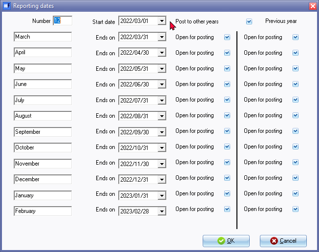

Reporting dates
This option allows you to set the start date of your financial year and define the periods within it. By selecting this option, you can specify when your financial year begins and ends, as well as how it is divided into reporting periods.
Additionally, you can close a specific period or year for posting transactions to the ledger, effectively preventing any further changes or updates to that time period. This can be useful for ensuring the accuracy and integrity of your financial records.
It is important to set up the reporting dates or accounting periods for your financial year. You can select specific reporting periods to print financial statements and other reports, or to filter and export the data in spreadsheets. Typically, this is done on an annual basis, but you can also choose reporting periods that cover 6 months, 4 months, 3 months, 2 months, or 1 month, depending on your needs.
You can choose to have anywhere from 1 to 13 reporting dates in a year, depending on your needs. These dates help you organize your financial data and generate reports on your entity's financial activities, performance, and position.
If you want to prevent any further posting to a previous reporting period, you can restrict posting for that period or for the entire previous year. However, you'll still be able to view the transactions and details for these "Closed" periods.
To set Reporting dates:
- On the Setup ribbon, select Setup → Reporting dates.

- To set up your reporting dates in osFinancials, you'll need to select the following options:
- Number - This is the number of reporting dates, or financial periods, for which you can enter transactions and view reports. Usually, businesses use 12 periods to cover each calendar month in a financial year (i.e. 1 year).
|
|
However, small businesses with minimal transactions may choose to use 6-month periods. |

- Start date - This is the starting date of your financial year. You'll need to enter the date from which you want your reporting periods to begin.
- Post to other years - By default, this option is ticked, allowing you to process transactions, budgets, and other entries to any of the financial years preceding the financial year in the "Start date" field. If you uncheck this box, you won't be able to post anything to the previous financial years.
- Previous year - By default, this option is ticked, allowing you to process transactions, budgets, and other entries to the previous financial year preceding the this year's reporting periods. If you uncheck this option, you can prevent posting to the previous financial year preceding the this year's reporting periods. This is a helpful feature if you want to avoid inadvertent modifications to data from the previous financial year by users.
- Open for posting - These options allows you to select specific period(s) in the Post to other years and Previous year columns. last By default, this option is ticked, allowing you to process transactions, budgets, and other entries to the financial periods that ends on the periods specified in the "Ends on" field. If you uncheck this box for specific period(s), you won't be able to post anything to that financial period(s) for Post to other years and/or Previous year .
- If you click on the OK button.
|
|
If you choose a number of reporting periods that is different from the default of 12, the "Reporting dates" screen will adjust to show only the number of periods you have entered. You can then customize the descriptions of these periods (for example, using calendar months like "January" to "December") to match your specific needs. These descriptions will appear in the Periods lookup facility for both the current year and the previous year, as well as on reports. In this documentation, we use the yyyy/MM/dd format (such as 2022/03/01) for short dates. However, you can change the date style or format in your system to display short dates in the way that best suits your needs on screens, reports, and documents in osFinancials. |
|
|
If the date in your system is beyond the date of the last period indicated on the "Reporting dates" screen, you will receive a prompt to perform a year-end process (Do year end on the Setup ribbon). |